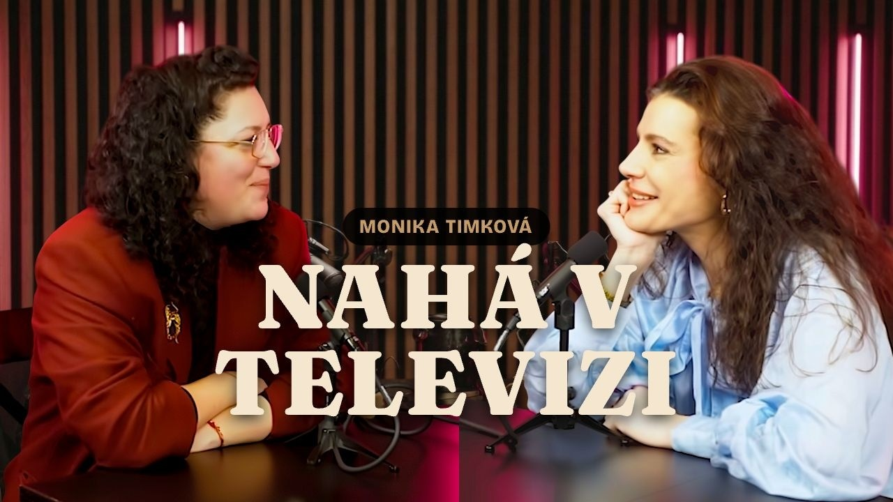
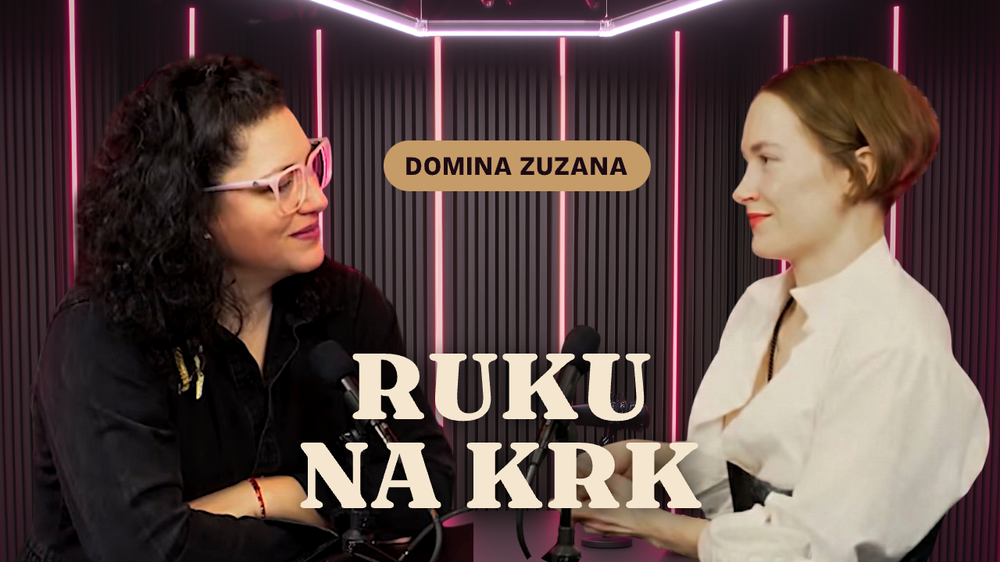

Brand Manual
Šimrání
Podcast a komunita o intimitě, sexualitě a vztazích. Kde ostatní končí, tam my začínáme.
v2.1 · Únor 2026 · Teplá noc
01
Barevná paleta
Paleta „Teplá noc“ — intimní, sofistikovaná, teplá. Tmavé pozadí vytváří bezpečný prostor, zlaté akcenty přidávají eleganci bez okázalosti.
Aa
Deep
#1A0A14
Hlavní pozadí
Aa
Wine
#4A1942
Gradienty, karty
Aa
Gold
#C59B68
Akcenty, CTA, labely
Aa
Cream
#F5E6D0
Hlavní text
Opacity varianty
gold-06 — bordery
gold-10 — karty
gold-25 — hover
cream-60 — body text
cream-35 — meta
02
Typografie
Dva fonty. Fraunces pro emoce, Bricolage Grotesque pro informace. Kontrast serifového a bezserifového písma vytváří napětí mezi intimitou a přístupností.
Fraunces — headlines, citace, cena
Kde ostatní končí,
tam já začínám.
„Poprvé cítím, že nejsem divná.“
Bricolage Grotesque — body, labely, navigace
Co se šušká
200+ epizod v archivu. Měsíční live setkání s Markétou. Discord plný lidí, se kterými můžeš řešit to, co jinde nemůžeš.
Hierarchie
H1 — Hero
Fraunces 400 / 48–64px
Kde ostatní končí
H2 — Section
Fraunces 400 / 32–48px
Šimrání mění životy
Label
Bricolage 400 / 11px / +3px
Vyšimraná komunita
Body
Bricolage 300 / 15px
Otevřené rozhovory o intimitě, vztazích a sexualitě.
Citace
Fraunces Italic 300 / 21px
„Intimita začíná tam, kde končí komfortní zóna.“
Meta / Tag
Bricolage 400 / 12px
Apple Podcasts · 42 min · Komunikace
CTA
Bricolage 600 / 15px
Zkus to na měsíc
03
Tonalita & hlas
Šimrání mluví jako kamarádka, které věříš — otevřeně, bez souzení, s humorem. Nikdy nepoučuje. Nikdy neprovokuje jen pro pozornost.
Brand archetype
Explorer × Sage × Jester
Tone of voice
Ano
Hravá a otevřená
Primární tón. Lehkost i u těžkých témat. Humor jako nástroj normalizace.
Ano
Normalizující
Žádné téma není divné. „Jsem normální“ je klíčová věta, kterou posluchači opakují.
Ano
Intimní, ne vulgární
Přímá bez eufemismů, ale vždy s respektem. Říkáme orgasmus, ne „vyvrcholení“.
Ano
Zvědavá, ne poučující
Ptáme se, nezpovídáme. Markéta jde první, ostatní následují.
Ano
Provokativní, ne clickbaitová
Provokace je OK, pokud za ní stojí reálný obsah a normalizující úhel. „Ruku na krk“ je provokativní. „ŠOKUJÍCÍ PRAVDA O...“ je clickbait. Rozdíl je v důvěře.
Ne
Clickbaitový
Žádné „ŠOKUJÍCÍ PRAVDA O...“ nebo „Co vám nikdo neřekne“. Budujeme důvěru, ne kliknutí.
Ne
Terapeutický
Nejsme terapeuti a netvrdíme to. Jsme průvodci. „Pojď, nic se nestane.“
Slova, která nás definují
zvědavost
odvaha
hravost
bezpečí
normálnost
otevřenost
intimita
Slova, kterým se vyhýbáme
špinavý
perverzní
tabu
stydlivý
zakázaný
kontroverzní
04
Dva režimy komunikace
Jiný kanál, jiný slovník. Na webu jsme přístupní, na Instagramu autenticky syrové.
Web-safe (PG-13)
Web, SEO, email, B2B
- intimita, vztahy, touha
- blízkost, hranice, rozkoš
- komunikace, sebepřijetí
„Mluvíme o tom, co tě vzrušuje, co tě trápí a co bys chtěla ve své intimitě změnit.“
IG-raw (8/10)
Instagram, podcast, Discord, Forendors
- orgasmus, masturbace, fetiš
- BDSM, rozkoš, vzrušení
- + hovorové výrazy v kontextu
„Mluvíme o orgasmech, fetišech a o tom, proč se za ně pořád stydíme.“
05
Copy vzory z webu
Skutečné texty používané na simrani-web.vercel.app. Následuj vzory pro konzistentní hlas.
| Element |
Vzor |
Aktuální text |
| Hero claim |
Krátký, sebevědomý, v 1. osobě |
Kde ostatní končí, tam já začínám. |
| Hero sub |
Popis formátu + tón |
Otevřené rozhovory o intimitě, vztazích a sexualitě. S lehkostí, respektem a zvědavostí. |
| Section label |
Hravý, krátký, brand-specific |
Co se šušká · Vyšimraná komunita · Od studu k odvaze |
| Section headline |
Emoční, v 2. osobě |
Přidej se ke komunitě, kde se nemusíš stydět |
| Body text |
Fragmenty. Tečky místo čárek. |
200+ epizod v archivu, měsíční live setkání s Markétou a Discord plný lidí, se kterými můžeš řešit to, co jinde nemůžeš. |
| CTA primární |
Z pohledu uživatele, ne akce |
Zkus to na měsíc |
| CTA sekundární |
Soft link, šipka, gold |
Odemkni dalších 200+ epizod na Forendors → |
| YT Main Title |
Hook, 2–5 slov, twist perspektivy |
RUKU NA KRK |
| YT Pill |
Kontext k titulku, jméno/role hosta |
DOMINA ZUZANA |
| About claim |
Kontrast: nejsem X, jsem Y |
Nejsem terapeutka. Jsem průvodkyně, která jde první a říká: pojď, nic se nestane. |
06
Primární persona
Každý text, vizuál a CTA míříme na Katku. Její stud je naše bariéra. Její „jsem normální“ je náš úspěch.
„Katka“
28–40 let · v dlouhodobém vztahu · Praha / Brno · VŠ vzdělání
Když se cítím zaseklá v intimitě a nemám s kým mluvit, chci poslouchat upřímné rozhovory od lidí, co řeší to samé — abych pochopila, co je normální, nabrala odvahu a necítila se sama.
Cítí
Něco chybí, ale neumí to pojmenovat. Stydí se za své otázky. Bojí se, že je „divná“.
Hledá
Normalizaci. Jazyk pro touhy a hranice. Komunitu, kde se nemusí přetvařovat.
Bariéry
Stud („co když to někdo uvidí?“), nedůvěra („je to seriózní?“), přehlcení („200+ dílů, kde začít?“).
07
Instagram — posty
Čtvercové karty (1080×1080). Typografie na gradientu. Žádné stockové fotky, žádné obličeje — jen text a barva.
„Zvědavost místo studu. Slova místo ticha.“
@simrani.podcast
„Consent není jen slovo. Je to praxe.“
Epizoda 07
„Poprvé cítím, že nejsem divná. Tohle je můj safe space.“
Komunita
„Pojď, nic se nestane.“
— Markéta
Pravidla pro IG posty
• Vždy gradient z brand palety (wine → deep, nebo deep → wine)
• Text: Fraunces Italic pro citáty, Bricolage pro tagy
• Max 2 řádky textu. Méně = lépe.
• Žádné fotky obličejů, žádný stock. Čistá typografie.
• Tag @simrani.podcast nebo číslo epizody vždy dole
08
Instagram — Reels
Vertikální formát (1080×1920). Titulková karta na začátek Reelu — hook, který zastaví scrollování.
Komunikace
Jak říct partnerovi, co chceš v posteli
@simrani.podcast
Destigmatizace
3 věci, za které se stydíš zbytečně
@simrani.podcast
Rozkoš
Proč orgasmus není cíl (a co je)
@simrani.podcast
Pravidla pro Reels
• Titulková karta: gradient pozadí, topic label (gold, uppercase), headline (Fraunces)
• Headline = hook. Otázka nebo překvapivé tvrzení.
• Max 8–10 slov v headline. Čitelné na malém displeji.
• Handle vždy dole — konzistentní pozice
• Tone: IG-raw mód — přímější, odvážnější
09
YouTube — thumbnaily
Horizontální (1280×720). Thumbnail je billboard — musí zastavit scroll za zlomek sekundy a vyprávět příběh bez YouTube titulku.
Kompozice
• Levá třetina: Markéta (moderátorka) — kotva, rozpoznatelnost
• Pravá třetina: Host epizody — novinka, důvod kliknout
• Střed: Main Title + Pill — copywriterské jádro thumbnailu
• Fotky hostů s odstraněným pozadím přes studiovou fotku
• Žádný text přes obličej. Čistá kompozice.
Jak oko čte thumbnail (pořadí vnímání)
1. Main Title (Fraunces 900, 120px, cream) — oko jde sem první. Provokace, zastaví scroll.
2. Pill (Bricolage 800, gold bg + deep text) — teprve potom. Dodá kontext.
3. Fotky — kdo tam je, prostředí.
Tohle pořadí je klíčové: Main Title = „wait, co?“ moment. Pill = vysvětlení, které z provokace udělá smysl. Funguje jako cliffhanger — nejdřív úder, pak odhalení.
Copywriterský přístup
• Twist perspektivy: Ne očekávaný úhel, ale překvapivý pohled zevnitř. Ne „co dělá domina klientům“, ale „co chce domina sama“.
• Max 2–5 slov. Čitelné i v 120×68px na mobilu.
• Provokativní, ne clickbaitové. Za každým titulkem stojí reálný obsah a normalizující úhel.
• Dvojsmysly a wordplay jsou vítané („Co bere pilulka“ = co užíváš × co ti to odnímá).
• Dvouslovné fragmenty s tečkou pro rytmus a údernost („Domina. Masérka.“).
• Pill funguje jako kontext: jméno + role hosta, aby thumbnail dával smysl i bez YouTube titulku.
Příklady


Typografie & vizuál
• Main Title: Fraunces 900, 120px, cream, centrovaný, drop shadow (blur 30, spread 14, #000000DD)
• Pill: Bricolage Grotesque 800, gold bg (#C59B68) + deep text (#1A0A14), zaoblený, centrovaný nad titulkem
• Studiová fotka jako background fill
• Musí být čitelný i v 120×68px (mobilní YouTube feed)
10
Positioning
Jedno tvrzení, které shrnuje celý brand.
Šimrání je podcast a komunita pro lidi, kteří chtějí porozumět své intimitě — bez studu, bez kázání, s naprostou otevřeností — protože spokojený intimní život začíná odvahou o něm mluvit.
Klíčový claim
Kde ostatní končí, Šimrání začíná.
Markéta jednou větou
Nejsem terapeutka. Jsem průvodkyně, která jde první a říká: pojď, nic se nestane.